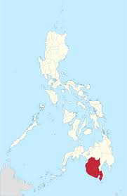
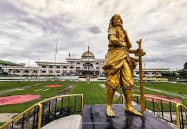

A Rich and Storied Past
The area now known as Sultan Kudarat was once part of the historic Maguindanao Sultanate. It was officially created as a separate province on November 22, 1973, through Presidential Decree No. 341.
In 1989, the province became part of the Autonomous Region in Muslim Mindanao (ARMM). It was later transferred back to Central Mindanao in 1998, and in 2001 the region was renamed SOCCSKSARGEN.
One of the most tragic events in the province's history is the Palimbang Massacre (also known as the Malisbong Massacre), which happened on September 24, 1974 during the martial law period under President Ferdinand Marcos. Many Moro residents were killed by military forces.
Today, Sultan Kudarat continues to grow and celebrate its natural environment and culture, including the Sultan Kudarat Bird Festival held at the Baras Bird Sanctuary in Tacurong City.

